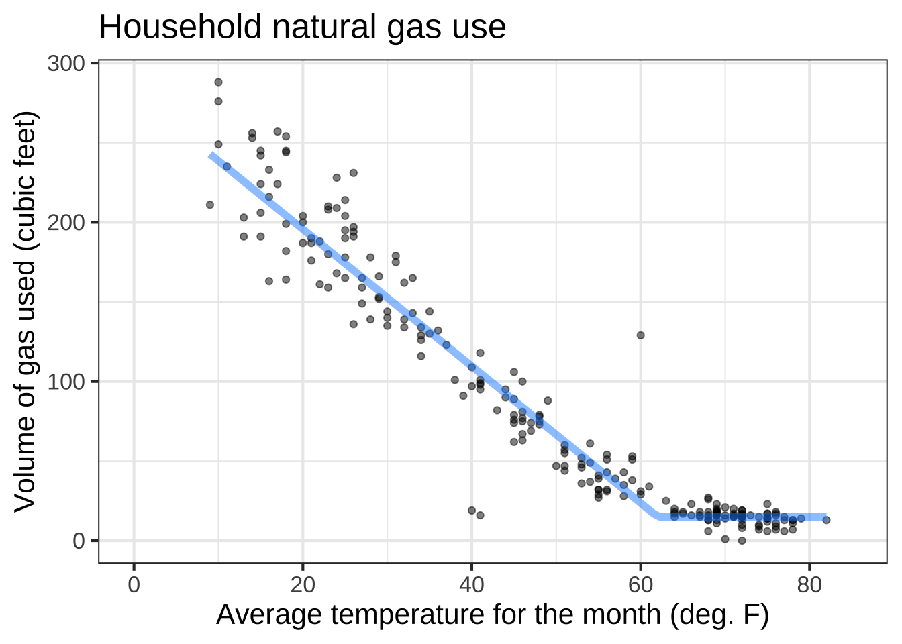

Chapter 13 Piecewise functions
- [Fun-4-b-4a] Identify graphs of a piecewise linear function.
- [Fun-1C-d] Construct a hock-stick function by piecewise combination of a constant function and a straight-line function with non-zero slope.
- [Fun-4-b-4b] Recognize traditional curly-brace notation for piecewise functions.
- [Fun-4-b-4c] Be able to create a piecewise function in R.
- [Fun-4-b-4d] Distinguish between continuous and discontinuous functions
Each of our basic modeling functions, with two exceptions, has a domain that is the entire number line \(-\infty < x < \infty\). No matter how big or small is the value of the input, the function has an output. Such functions are particularly nice to work with, since we never have to worry about the input going out of bounds.
The two exceptions are:
- the logarithm function, which is defined only for \(0 < x\).
- some of the power-law functions: \(x^p\).
- When \(p\) is negative, the output of the function is undefined when \(x=0\). You can see why with a simple example: \(g(x) \equiv x^{-2}\). Most students had it drilled into them that “division by zero is illegal,” and \(g(0) = \frac{1}{0} \frac{1}{0}\), a double law breaker.
- When \(p\) is not an integer, that is \(p \neq 1, 2, 3, \cdots\) the domain of the power-law function does not include negative inputs. To see why, consider the function \(h(x) \equiv x^{1/3}\).
It can be tedious to make sure that you are on the right side of the law when dealing with functions whose domain is not the whole number line. The designers of the hardware that does computer arithmetic, after several decades of work, found a clever system to make it easier. It’s a standard part of such hardware that whenever ta function is handed an input that is not part of that function’s domain, one of two special “numbers” is returned. To illustrate:
sqrt(-3)## [1] NaN(-2)^0.9999## [1] NaN1/0## [1] InfNaN stands for “not a number.” Just about any calculation involving NaN will generate NaN as a result, even those involving multiplication by zero or cancellation by subtraction or division.14 For instance:
0 * NaN## [1] NaNNaN - NaN## [1] NaNNaN / NaN## [1] NaNDivision by zero produces Inf, whose name is reminiscent of “infinity.” Inf infiltrates any calculation in which it takes part:
3 * Inf## [1] Infsqrt(Inf)## [1] Inf0 * Inf## [1] NaNInf + Inf## [1] InfInf - Inf## [1] NaN1/Inf## [1] 0To see the benefits of the NaN / Inf system let’s plot out the logarithm function over the graphics domain \(-5 \leq x \leq 5\). Of course, part of that graphics domain, \(-5 \leq x \leq 0\) is not in the domain of the logarithm function and the computer is entitled to give us a slap on the wrists. The NaN provides some room for politeness.
Open a sandbox and see what happens when you make the plot.
slice_plot(log(x) ~ x, domain(x=c(-5,5)))In a purely mathematical sense, the problem with functions being undefined over an extended part of a domain has been handled with cunning and imagination. But the solution—the invention of complex numbers—is not our concern here. Instead, we’re going to embrace functions that have a domain smaller than the whole number line and see what we can do with them.
To illustrate, let’s use computer notation to create a function whose domain is \(x < 1\). To do this, we need a way to write “if,” as in, “If \(x\) is 1 or greater, return NaN.” We’ll use a function in R that let’s ask a TRUE/FALSE question and, depending on the answer, do one or another calculation. The question-answering R function is ifelse() whose name is remarkably descriptive. The ifelse() function takes three arguments. The first is the question to be asked, the second is the value to return if the answer is “yes,” and the third is the value to return for a “no” answer.
g <- makeFun( ifelse(x < 1, x, NaN) ~ x)
slice_plot(g(x) ~ x, domain(x = c(-2, 2))) What takes getting used to here is the expression
What takes getting used to here is the expression x < 1 which is a question not a statement of fact. There’s no standard traditional mathematical notation for questions, although some people use a question mark as in \(x \stackrel{?}{<} 1\).
The table shows computer notation for some common sorts of questions.
| R notation | English |
|---|---|
x > 2 |
“Is \(x\) greater than 2?” |
y >= 3 |
“Is \(y\) greater than or equal to 3?” |
x == 4 |
“Is \(x\) exactly 4?” |
2 < x & x < 5 |
“Is \(x\) between 2 and 5?”15 |
x < 2 | x > 6 |
“Is \(x\) either less than 2 or greater than 6?” |
abs(x-5) < 2 |
“Is \(x\) within two units of 5?” |
13.1 Piecewise functions
Having an ability to split up the domain of a function and provide different formula for each of the pieces allows us to construct piecewise functions. To illustrate, the function \(h(x) \equiv |x|\). You’ll recognize this as the “absolute value” function. The intuitive algorithm is to “strip the negative sign, if any” from the input. But with the ability to divide the domain into pieces, we gain access to a less mysterious sort of arithmetic operation and can re-write \[h(x) \equiv \left\{ \begin{array}{cl} x & \text{for}\ 0 \leq x\\-x & \mbox{otherwise}\end{array} \right.\] Or, in computer notation
h <- makeFun(ifelse(x >= 0, x, -x) ~ x)Note that the absolute value function is built-in to R in the form of the abs() function.
Less familiar is the Heaviside function which has important uses in physics and engineering:
\[\mbox{Heaviside}(x) \equiv \left\{ \begin{array}{cl} 0 & \text{for}\ x < 0\\1 & \mbox{otherwise}\end{array} \right.\] In computer notation, this is
Heaviside <- makeFun(ifelse(x < 0, 0, 1) ~ x) The vertical gap between the two pieces is called a discontinuity. Intuitively, you cannot draw a discontinuous function without lifting the pencil from the paper. The Heaviside function has a discontinuity at \(x=0\).
The vertical gap between the two pieces is called a discontinuity. Intuitively, you cannot draw a discontinuous function without lifting the pencil from the paper. The Heaviside function has a discontinuity at \(x=0\).
Similarly, the ramp function is a kind of one-sided absolute value: \[\mbox{ramp}(x) \equiv \left\{ \begin{array}{cl} x & \text{for}\ 0 \leq x\\0 & \mbox{otherwise}\end{array} \right.\] Or, in computer notation:
ramp <- makeFun(ifelse(0 < x, x, 0) ~ x)
slice_plot(ramp(x) ~ x, domain(x=c(-3, 3)))
A linear combination of two input-shifted ramp functions gives a piecewise version of the sigmoid.
sig <- makeFun(ramp(x+0.5) - ramp(x-0.5) ~ x)
slice_plot(sig(x) ~ x, domain(x=c(-3, 3))) ::: {.workedexample}
::: {.workedexample}
Figure ?? is a graph of monthly natural gas use in the author’s household versus average temperature during the month. (Natural gas is measured in cubic feet, appreviated ccf.)
 The graph looks somewhat like a hockey stick. A sloping straight-line dependence of ccf on temperature for temperatures below \(60^\circ\)F and constant for higher temperatures. The shape originates from the dual uses of natural gas. Gas is used for cooking and domestic hot water, the demand for which is more of less independent of outdoor temperature at about 15 ccf per month. Gas is also used for heating the house, but that’s needed only when the temperature is less than about \(60^\circ\)F.
We can accomplish the hockey-stick shape with a linear combination of the ramp() function and a constant. The ramp function represents gas used for heating, the constant is the other uses of gas (which are modeled as not depending on temperature. Overall, the model is \[\text{gas_ccf}(x) \equiv 4.3\, \mbox{ramp}(62-x) + 15\] Even simpler is the model for the other uses of natural gas: \[\text{other_ccf}(x) \equiv 15\].